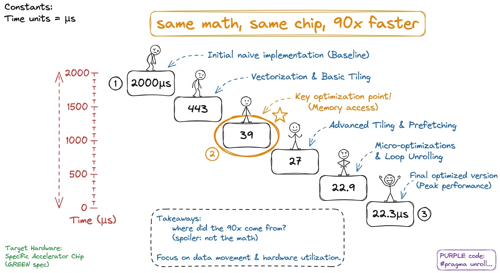
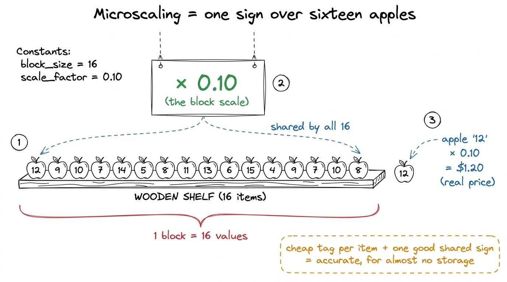
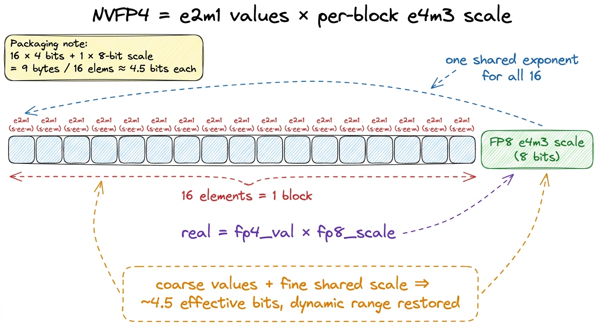
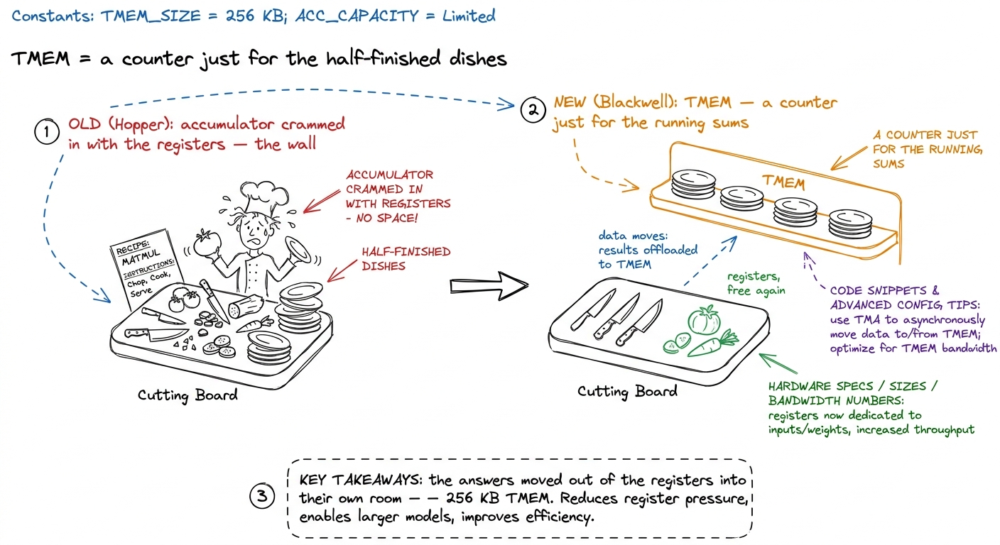
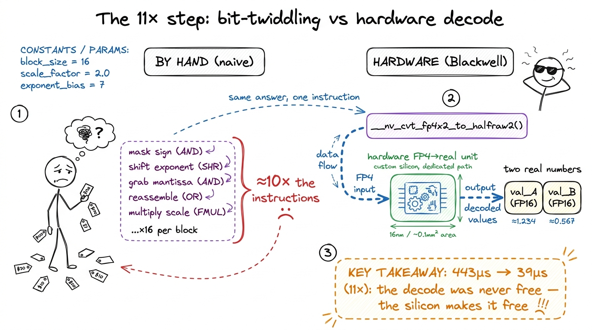
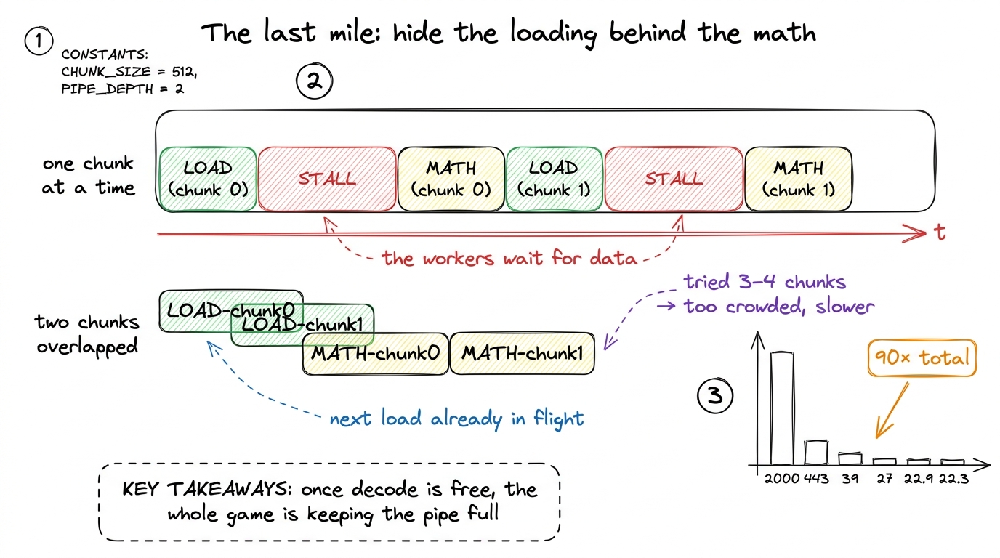

Teaching Blackwell & NVFP4: four-bit numbers that work
By the end of this chapter you'll be able to stand at a whiteboard and teach why a four-bit number — a number so coarse it can barely count to six — became the fastest way to run AI on NVIDIA's newest chip, and why a real kernel went from 2000 microseconds to 22 microseconds using them. You need no chip-design background. You need one story, one metaphor about a shared price tag, and the honesty to admit the trick sounds impossible until you draw it.
This is a frontier chapter. It sits at the very top of the workshop's ladder. So don't rush it, and don't pretend it's simple. Instead, lean into the wonder: the whole point is that something which shouldn't work, works beautifully — once you see the hidden helper.
Open with the hook: 2000 → 22
Start class with a single number on the board and nothing else.

figure rendering · The whole lecture is a countdown down this staircase.Plain words: what is a four-bit number, and why is it strange?
Every number a computer stores costs bits. More bits, more room, more precision — but also more weight to carry around. For years, AI chips have been putting numbers on a diet. They went from 32 bits, to 16, to 8. Each time you halve the bits, you can move numbers around twice as fast and pack twice as many onto the chip. Blackwell — NVIDIA's newest data-center GPU — takes the diet to its extreme: four bits per number. The format is called NVFP4.
Here's the strange part. Four bits can only make sixteen different patterns. So a single NVFP4 number can only be one of about sixteen values, and the biggest it can represent is roughly 6. That's it. You cannot store a real AI weight — which might be 0.003 or 512 — in a number whose whole world stops at six.
The secret: a shared price tag (microscaling)
Here is the entire trick, and it's beautiful once you see it. You don't store one number in four bits and expect it to be accurate. You store a little group of sixteen four-bit numbers together, and you give the whole group one shared scale factor — a single, more-precise multiplier that stretches all sixteen of them to the right size.
This is called microscaling. "Micro" because the scale is shared over a small block — just 16 values — not the whole giant tensor.
In NVFP4 the "little number on each apple" is the four-bit value (its technical name is e2m1 — 1 sign bit, 2 exponent bits, 1 mantissa bit). The "shelf sign" is an eight-bit number in a format called FP8 e4m3, shared across the block of 16. The real value you reconstruct is just:
real value = (4-bit value) × (shared 8-bit block scale)
figure rendering · The four-bit values are the cheap per-apple tags; the FP8 scale is the
figure rendering · The same idea in the chip's own language: sixteen e2m1 values riding oThe tiny by-hand example
Do this on the board. It takes two minutes and it kills all the mystery.
[3, 1, 4, 2]. The one shared block scale is 0.5. To get the real numbers, multiply every tag by the shared scale: 3×0.5 = 1.5, 1×0.5 = 0.5, 4×0.5 = 2.0, 2×0.5 = 1.0. So four almost-free tags plus ONE good number reconstructed four real values. Now change the shared scale to 0.01 and redo it: 0.03, 0.01, 0.04, 0.02 — the same tags now describe tiny numbers. The tags say "which is bigger"; the shared scale says "how big we're talking." One knob rescales the whole block.That is the whole numeric idea. Coarse shapes, one shared magnitude, multiply to reconstruct. Everything else in this chapter is about making that multiply free.
Where the accumulator lives: Tensor Memory (TMEM)
Now the second Blackwell idea, and it's a plumbing idea, not a numbers idea. To teach it you first remind students what a GPU does with matrix multiplication: it multiplies pairs of numbers and adds up the running totals. Those running totals are called the accumulator — the scratchpad where partial sums pile up.
For four generations of GPUs, that scratchpad lived in the chip's registers — the tiny, ultra-fast slots next to each worker. But registers are a cramped shelf, and modern tensor cores are so fast and their tiles so big that the answers no longer fit. The register file became the wall: you could make the math faster, but you had nowhere to put the answers.
Blackwell's fix is blunt: give the accumulator its own room. A brand-new, dedicated memory space called Tensor Memory, or TMEM — 256 KB per SM, whose only job is to hold tensor-core operands and answers.

figure rendering · Blackwell gives the accumulator its own dedicated counter so it stopsx = tmem[5]. Draw it as a one-way counter: the tensor core puts dishes ON the counter; the waiters must physically carry them OFF to serve them. Say: "You don't read TMEM. You drain it." That single verb — drain — fixes the confusion.You can mention two more Blackwell moves lightly, without dwelling: the new tensor core (tcgen05) is fired by a single thread, and the biggest tiles are so wide that two neighboring SMs pair up to feed one multiplication. Both are the same theme — the math unit got so fast the whole chip is redesigned just to keep it fed. Name the theme and move on.
Now the payoff: walking the 2000 → 22 staircase
Here's where you cash in the hook. The hackathon operation was a GEMV — a big matrix streamed past a small vector, one of the most memory-bound jobs there is. NVFP4 makes the bytes 3.5× lighter, so this should be fast. Walk the staircase and show why it wasn't — until it was.

figure rendering · The naive kernel reconstructed every four-bit value by hand; Blackwell
figure rendering · The final polish is pure logistics: overlap the next chunk's loading wThe production link: this is running today
Make sure students know this isn't a lab toy.
Teaching notes: the board plan
[3,1,4,2] × 0.5 example, then rescale it to × 0.01. This is the heart; go slow. (4) 20–28 min: the 4.5-bits-per-element storage number (the "aha"). (5) 28–36 min: TMEM as the dedicated prep counter, and the word drain. (6) 36–45 min: walk the staircase, crossing off the banner, landing on "the 11× came from less code." End on the production line. Checkpoint questions along the way below.Checkpoint questions to toss out: "Why can't a single four-bit value store an AI weight?" (too coarse, tops out at 6). "What does the shared scale carry that the four bits don't?" (the magnitude / ballpark). "Where did the biggest speedup come from — moving fewer bytes, or fewer instructions?" (fewer instructions — the hardware decode). "What's the one word for reading a result out of TMEM?" (drain — you copy it out; you can't read it directly).
You can now teach
- Why a lone four-bit number is useless — the sixteen-mark ruler that stops at six — and why that's not the whole story.
- Microscaling as a shared supermarket price tag: sixteen cheap per-apple tags plus one good shared shelf sign, with the by-hand
× scaleexample that makes it concrete. - The 4.5-bits-per-element storage math and the ~3.5× byte savings that make NVFP4 fast on memory-bound work.
- Tensor Memory (TMEM) as a dedicated prep counter for the accumulator, and the crucial rule that you drain it rather than read it.
- The 2000 → 22.3 µs staircase, and the punchline that the 11× win came from less code — a hardware decode, not clever bit-twiddling.
- The production stakes: this exact format and decode trick is how frontier models run cheaply on Blackwell today.